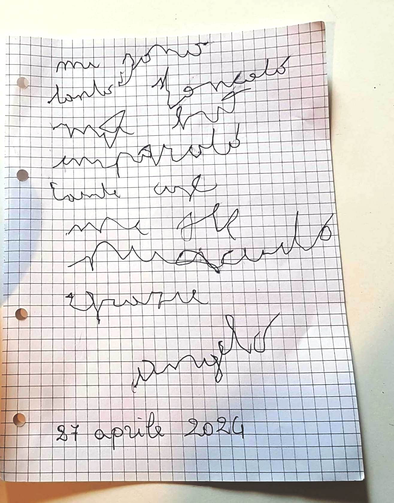
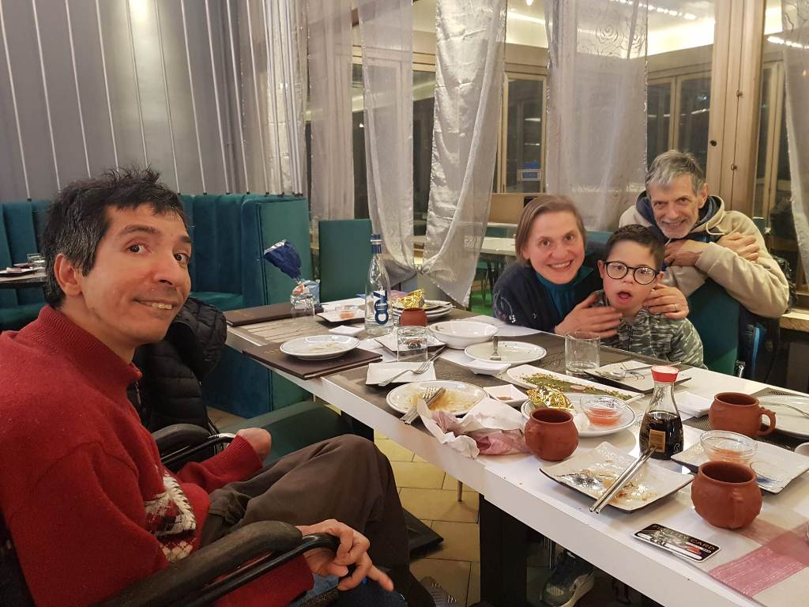
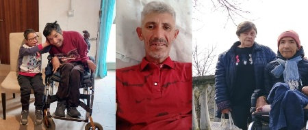

Testimonianza di Angelo
Angelo – Un ausilio per comunicare
27/4/2024 – Associazione “Eri, Simone” ETS
Angelo pronuncia solo qualche parola e comunica soprattutto digitando su una tastiera di carta, con il supporto della mamma che le tiene la mano. Gli viene offerto un sistema che permette di scegliere tra alternative, ma la sua autonomia è in crescita grazie a supporto e preghiera.
Uno dei momenti chiave arrivò quando, dopo qualche domanda, Angelo sembrava bloccato e non rispondere più. Chiesto il motivo, con il supporto della mamma, scrisse: “Ho paura”. Io, insieme a lui, invocando lo Spirito Santo, gli ho suggerito una piccola preghiera: “Gesù manda via la mia paura” . Dopo qualche istante, Angelo scrisse da solo: “STO BENE”, e si mise a cantare felice.
È stato un momento "divino", che ci ha ricordato quanto la preghiera può cambiare una persona, anche nell'immediato. Angelo è stato un dono di Dio, accolto da una famiglia generosa che lo ama nonostante le sfide. L'ausilio di comunicazione non ha ancora atticchito nella vita di Angelo, ma questo bambino ha preso il volo dal punto di vista spirtuale. Diversi pellegrinaggi, ha scelto il suo santo protettore a Padova (non proprio comodo da Cuneo)... e la famiglia lo appoggia, lo accompagna, con coraggio, accettando una volontà del Signore diversa dalla loro.
Il nostro piccolo sforzo è diventato una meraviglia di Dio, dimostrando come la solidarietà, la pazienza e la fede possano trasformare vite.
Ringraziamo e lodiamo il Signore per questa meraviglia, e per ogni Angelo che ci incrocia il cammino.

“Mi sono tanto stancato ma ho imparato tante cose, mi sei piaciuto, grazie”

Daniela, Danilo e Angelo: una famiglia unita nell’amore e nella solidarietà
